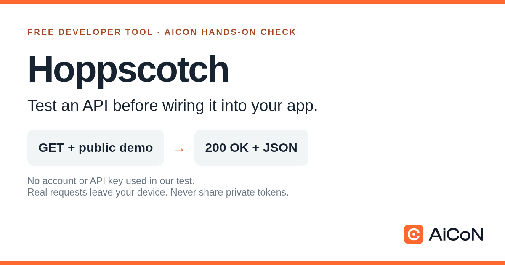
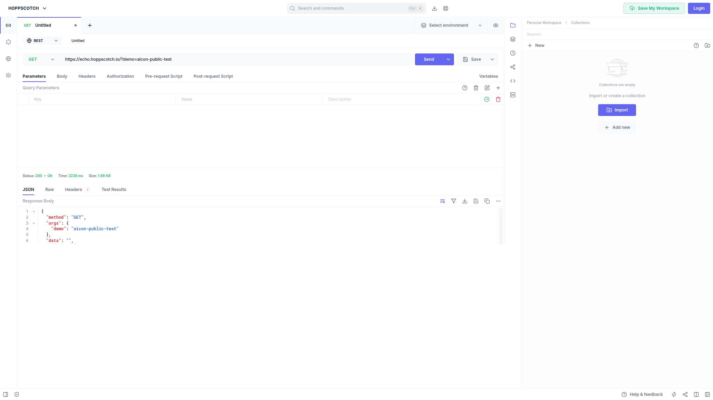

Hoppscotch: test an API before wiring it into your app
Building an app, website or automation that calls an API? Before blaming your code, send one small request and inspect the response. Hoppscotch gives you a browser interface for the URL, method, parameters, headers and returned data. We tested a public GET request without signing in or supplying an API key.

This is an API client, not a tool for gaining access to someone else's systems. Requests really leave your device and reach the endpoint. Do not paste company tokens, session cookies, passwords or private customer data into a casual hosted demo. Do not send write/delete requests to production just to see what happens.
What it does
Hoppscotch is an open-source API development and testing project. Its REST interface lets you choose an HTTP method, add an endpoint and inspect the response status, body and headers. It also has collections, environments, scripting, GraphQL and realtime features. This guide's hands-on check covers only one unauthenticated public GET, not every protocol or feature.
This is useful when a third-party integration fails and you need to distinguish a bad URL, missing parameter, authentication problem or unexpected response from a bug in your own app. The exact cause still needs investigation; a 200 status alone does not prove an integration is correct.
The exact test we ran
- Opened the official web app in its guest interface. The default request was GET, with the public Hoppscotch echo endpoint.
- Entered this URL, keeping Authorization empty and adding no credentials:
https://echo.hoppscotch.io/?demo=aicon-public-test
- Pressed Send and waited for the response.
- Observed 200 OK. The response said its method was GET and its
args.demovalue wasaicon-public-test. - Checked Settings: Browser was the selected interceptor, not Proxy, Agent or Browser extension. No extra app/extension was installed for this request.
Selected response fields were:
{
"method": "GET",
"args": {
"demo": "aicon-public-test"
}
}This is an excerpt, not the complete response. The echo service also returns request metadata. Our demo text was deliberately non-private. We made no authenticated call, created no account, saved no cloud collection and tested no POST, PUT or DELETE request.

How to use it for a real debugging task
- Start with a documented read-only endpoint you are allowed to call. Check the provider's rate limits and terms.
- Choose the correct method. Do not replace GET with POST or DELETE unless you understand and intend the effect.
- Put query parameters in the URL or Parameters tab. Check spelling, case and encoding against the API documentation.
- For an authorised authenticated API, use only an approved environment and credential-handling process. This article intentionally provides no real token example.
- Inspect the returned status and content. Confirm expected fields and values, not simply a green success indicator.
- When sharing a screenshot or request example, remove tokens, cookies, private URLs, account identifiers and response data first.
Use synthetic data while learning. Some GET endpoints can still trigger actions if the service is poorly designed, so follow that API's documentation rather than assuming a method name guarantees safety.
What is free, and what is paid?
The current official pricing page lists a $0 plan with REST, GraphQL and realtime testing, a personal workspace, collections/environments, scripts/tests, a collection runner and code snippets. The guest public GET worked without an account or payment in our check.
Team workspaces, collaboration, publishing, mocking, administration and other features have paid-plan boundaries. Do not assume everything shown on the marketing site is free, or that a feature in a pricing table is available without signing in. We did not subscribe or test team features.
The official quick-start documentation calls the self-hosted Community Edition free and MIT-licensed, including for personal and commercial projects. Self-hosting still needs your own infrastructure and upkeep. Enterprise products and hosted plans are separate; open-source software does not make hosting or support costless.
If you get a CORS or network error
A browser can block a request because of Cross-Origin Resource Sharing (CORS), even when the API works from a server or another client. That is not proof your credentials are wrong or that the endpoint is down.
Hoppscotch documents several interceptor options: Browser, Proxy, Agent and Browser extension. The Agent acts as a local intermediary; the Proxy routes requests through a proxy service. Desktop clients are another documented route. These change where a request goes and what software has access to it.
Before switching to a proxy, installing an extension/Agent or allowing localhost access, understand the permissions and destination. A public proxy may see the request you send through it. We did not install, pair or audit any of those components; the public echo test worked with Browser mode.
Privacy: not an offline or no-upload tool
Your API request must reach the target service. A request with a key, personal data or internal hostname has different stakes from our public sample. A hosted workspace, cloud sync, shared request or published collection can also create disclosures beyond the target endpoint.
The general Hoppscotch privacy policy describes automatic device/activity collection and technologies including analytics/session replay. It also describes sharing information with AI partners when using its AI capabilities. That policy is not proof that our test input was recorded, but it means this hosted product should not be advertised as blanket zero-tracking or fully private. We did not use its AI features or audit telemetry.
The project's security documentation distinguishes desktop, Agent, self-hosted and cloud security boundaries. A local mode is not the same as cloud sync, and a secret field is not a magic security guarantee. Use your organisation's approved deployment and keep shared environments/collections free of real secrets unless your policy explicitly covers them.
Version and security limits
No broad security certification is implied by this demo. An official advisory published in February 2026 describes a private-collection access-control issue affecting self-hosted backend versions up to 2026.1.1 and lists 2026.2.0 as patched. If self-hosting, check the current advisories and run a supported patched release. We did not establish the hosted service's deployed version or test the issue.
For a beginner, use the public echo example first. For production work, involve whoever owns the API and credentials. Never disable TLS verification or publish a collection merely to get a test working.
Open the official tools and sources
- Official product site and current pricing.
- Official quick start: cloud and self-hosted editions.
- REST API testing documentation.
- Interceptor documentation: Browser, Proxy, Agent and extension routes.
- Privacy policy and security policy.
- Official source repository.
- Official collection-access advisory: affected and patched versions.
AiCoN independent hands-on guide, 17 November 2026. No affiliation, payment or private API test. Access, plan features and software versions can change.